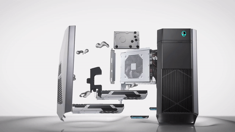

The Early Internet
Looking Back at the Web: 1995–2005
You are visitor # 00123456 since June 1, 2000
From Then to Now

Over the past two decades, the Internet has changed dramatically. What once required a desktop computer, a phone line, and patience can now be accessed instantly from nearly any smartphone, tablet, or laptop. Faster connections and improved technology have made the Internet an essential part of everyday life.
Early Internet (1995–2005)
- Dial-up Internet (56 Kbps)
- Desktop computers
- Yahoo! directories
- AIM chat rooms
- GeoCities personal websites
- Downloaded MP3 music
- Waiting several minutes for images to load
Modern Internet
- Fiber, Wi-Fi, and 5G connections
- Smartphones and tablets
- Google search
- Discord, WhatsApp, and Messenger
- Social media platforms
- Streaming music and movies
- Instant access to videos and cloud services
Today's Internet is faster, more reliable, and available almost everywhere. Video calls, online gaming, cloud storage, and streaming services have become common because of major improvements in networking technology. Although the early Internet was much slower, it introduced many of the ideas that continue to shape the web today.
Looking back at the early Internet reminds us how quickly technology can change. Many of the websites, services, and technologies from the early 2000s inspired the modern online experiences that millions of people use every day.